Instalação do FreeBSD 13
Introdução
Aviso: Não recomendo a instalação do FreeBSD em modo UEFI
Como proceder:
- Para navegar nos menus utilize as setas (←↑↓→)
- Para alterar o campo de seleção tecle ↹ Tab
- Para selecionar as opções ( * ) nos menus tecle Espaço
- Enter ⏎ quando quiser confirmar a seleção.
Essa é a tela de boas vindas do FreeBSD, tecle Enter ou aguarde o fim da contagem...
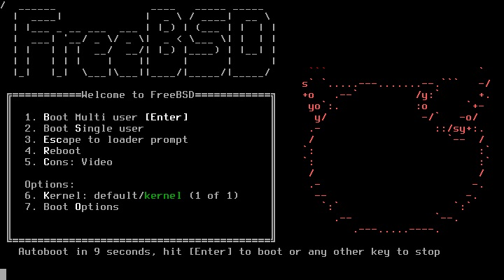
Selecione Install para iniciar o processo de instalação:
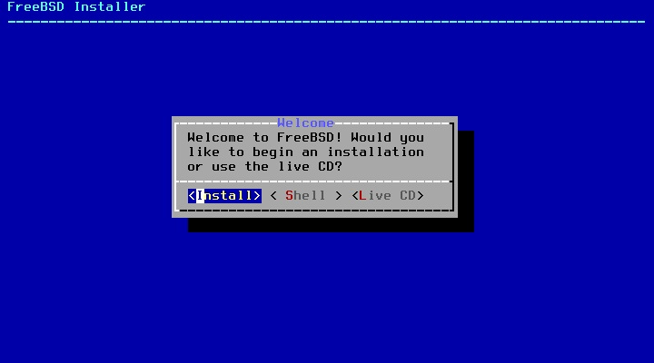
Selecione Brazilian (accent keys) e depois Continue with br.kbd keymap:
Se quiser você pode testar o teclado em Test br.kbd keymap.
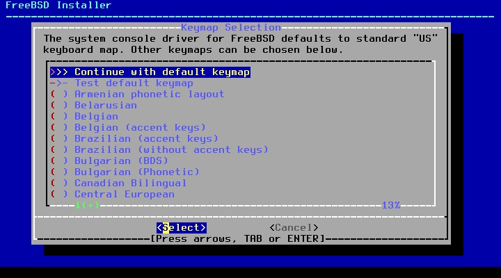
Escolha o hostname:
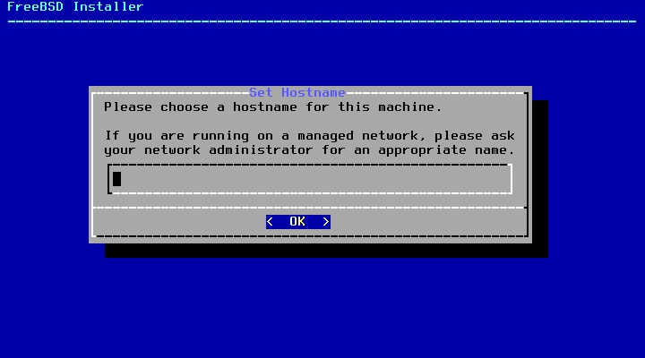
Selecione os componentes, recomendo o lib32 e o src:
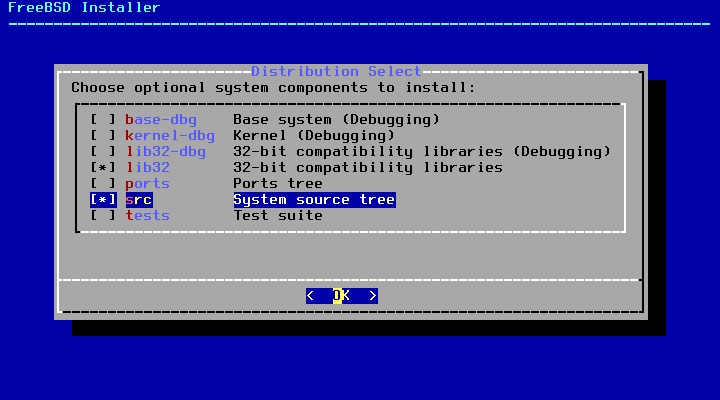
Para particionamento a nível de usuário final recomendo Auto (UFS):
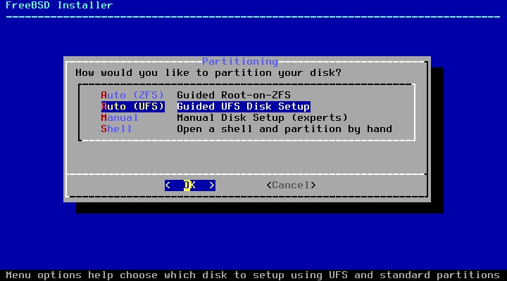
Selecione Entire Disk:
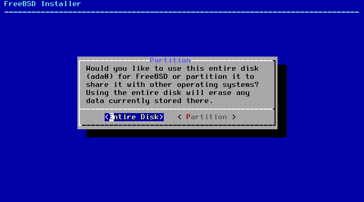
Na tabela de partição recomendo MBR para BIOS ou GPT para UEFI:
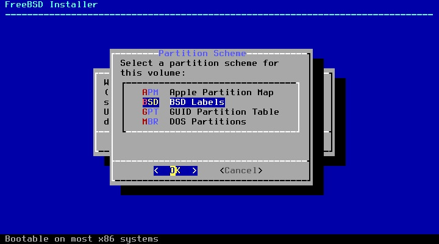
Caso esteja de acordo com a tabela de partição selecione Finish:
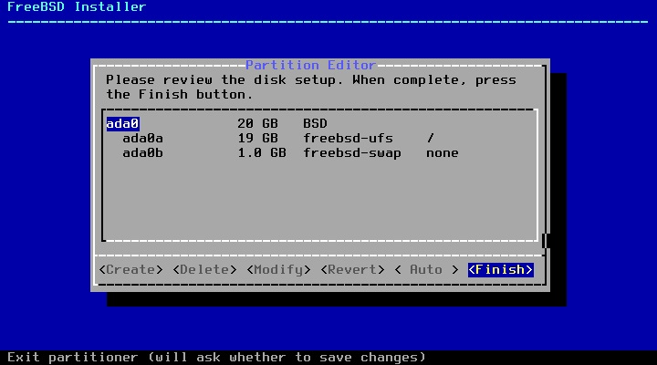
Caso esteja de acordo com as alterações em disco selecione Commit:
Alerta: Todos os dados no disco serão perdidos! Tenha a certeza de ter selcionado o disco correto e/ou ter feito backup antes de prosseguir!
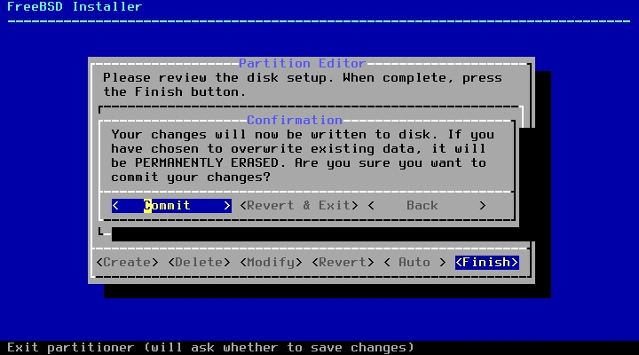
Aguarde o fetch...
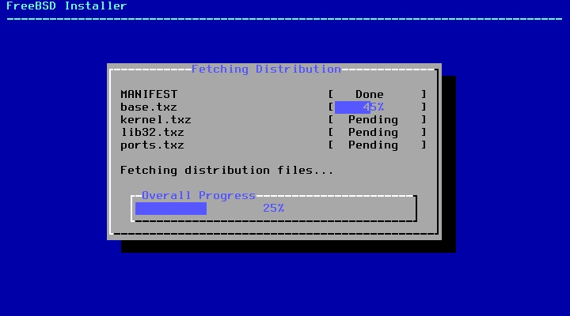
E o extract...
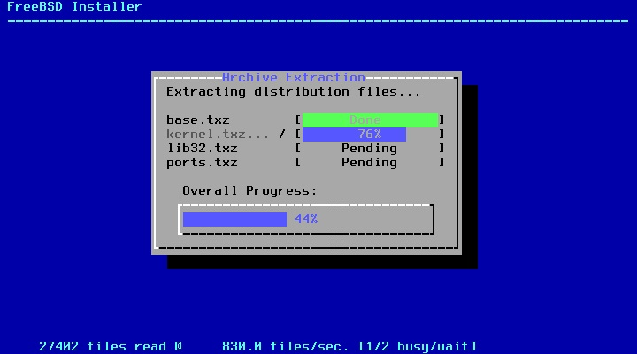
Insira a senha de administrador da máquina (root):
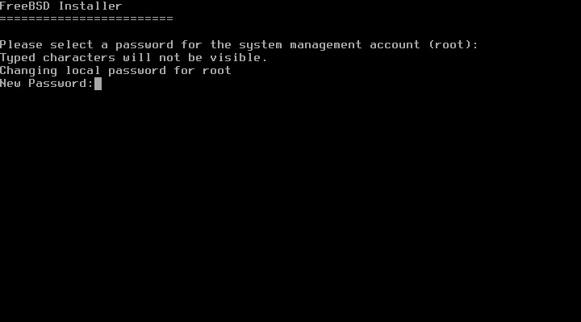
Selecione a interface de rede:
AVISO: No meu caso estou instalando numa interface a cabo, caso você esteja utilizando uma interface de rede sem fio você deve selecionar o orgão regulador (FCC, Brazil), a rede e a senha da sua conexão (não obtive sucesso ao conectar no Wifi com caracteres especiais)
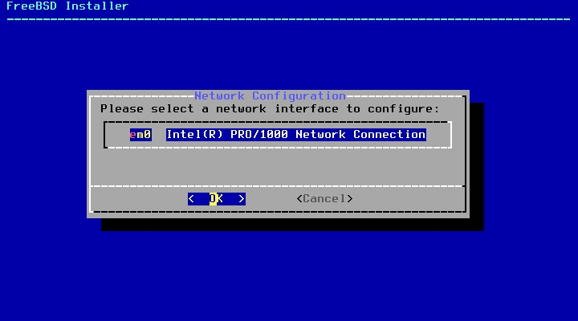
Selecione se você quer configurar IPv4 para essa interface (caso esteja em dúvida selecione Yes):
Selecione se você quer configurar DHCP para essa interface (caso esteja em dúvida selecione Yes):
Selecione se você quer configurar IPv6 para essa interface (caso esteja em dúvida selecione No):
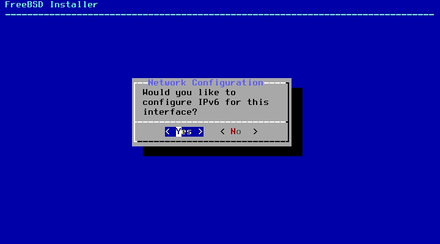
Caso deseje você pode configurar o IP de DNS (por padrão será carregado o ip do gateway, caso esteja em dúvida selecione OK):
*Recomendo o uso do OpenDNS (IPs 208.67.222.222/208.67.220.220 para IPv4 e 2620:119:35::35/2620:119:53::53 para IPv6)
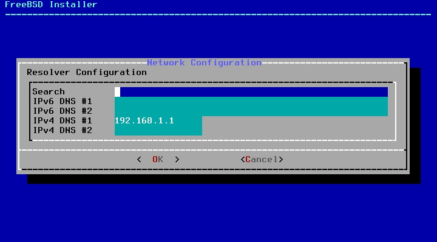
Selecione a sua região (America > Brazil > Estado):
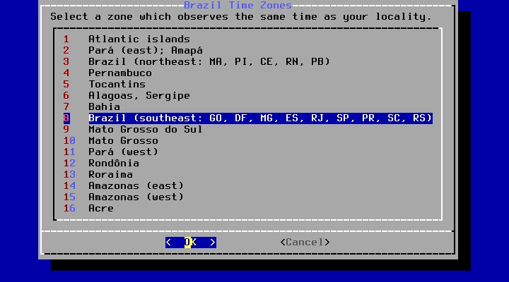
Se estiver correto confirme:
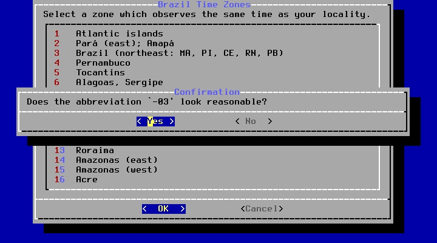
Caso a data esteja correta selecione Skip, caso contrário altere em Set Date:
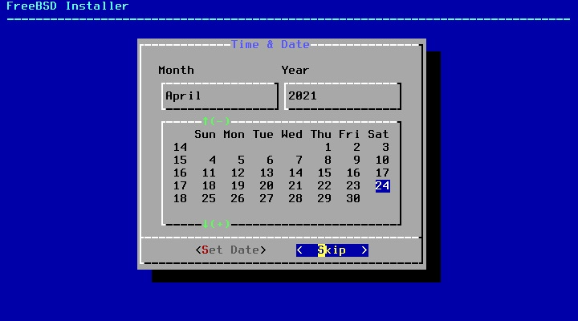
Caso a hora esteja correta selecione Skip, caso contrário altere em Set Time:
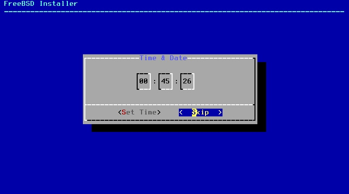
Selecione os serviços para serem iniciados no boot, recomendo deixar marcado ntpd e powerd:
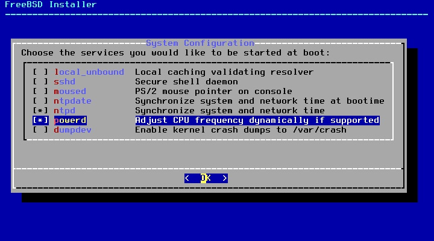
Aqui são as opções de enrigecimento de segurança, recomendo marcar clear_tmp, disable_syslogd, disable_sendmail, secure_console, disable_ddtrace:
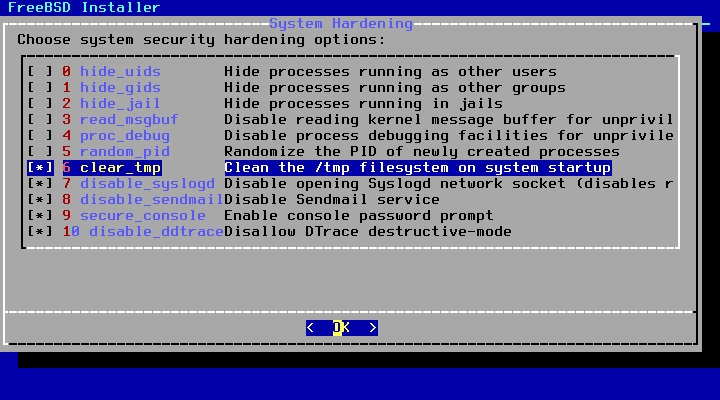
Selecione Yes para adicionar o seu usuário no sistema:
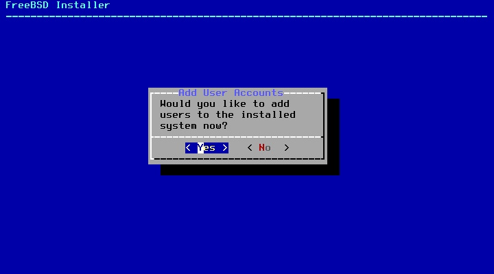
Username: insira aqui seu nome de usuário
Full name: apenas tecle Enter
Uid (Leave empty for default): apenas tecle Enter
Login group [seuusuário]: apenas tecle Enter
Login group is . Invite into other groups? []: wheel para acesso administrativo ou você pode simplesmente adicionar o grupo video se não quiser ceder acesso administrativo a essa conta mas quiser fazer uso de interface gráfica
Login class [default]: apenas tecle Enter
Shell (sh csh tcsh nologin) [sh]: apenas tecle Enter
Home Directory [/home/seuusuário]: apenas tecle Enter
Home Directory Permissions (Leave empty for default): apenas tecle Enter
User password-based authentication? [yes]: apenas tecle Enter
Use an empty password? (yes/no) [no]: apenas tecle Enter
Use a random password? (yes/no) [no]: apenas tecle Enter
Enter password: insira sua senha
Enter password again: confirme sua senha
Lock out the account after creation? (yes/no) [no]: apenas tecle Enter
Ok? (yes/no): yes
Add another user? (yes/no): no
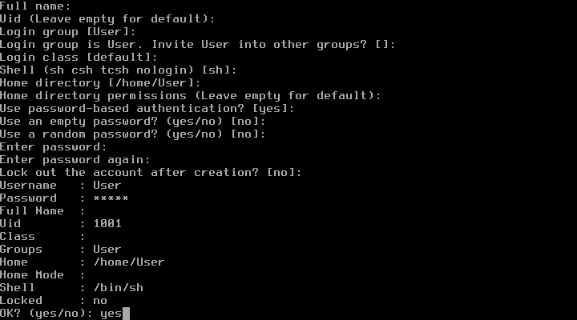
Selecione Exit (a menos que queira alterar algo):
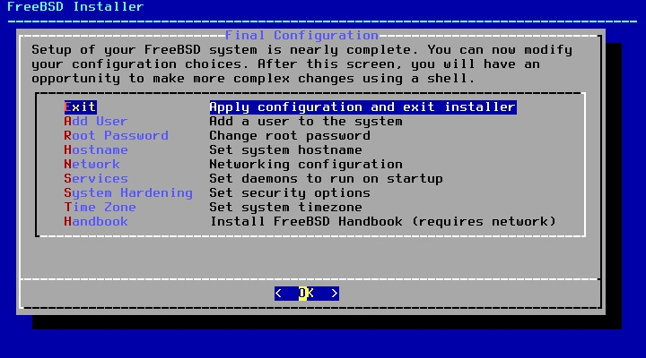
Selecione No:
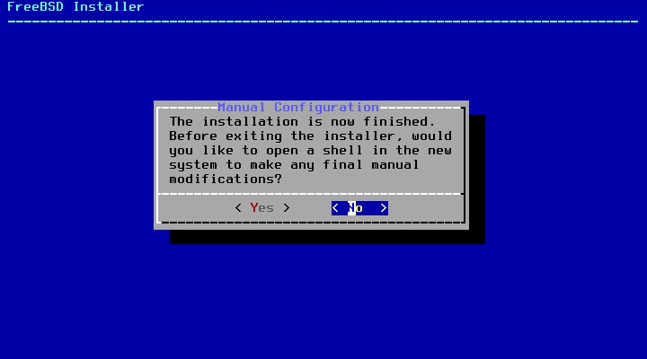
Selecione Reboot para concluir a instalação e reiniciar a máquina para o sistema instalado.
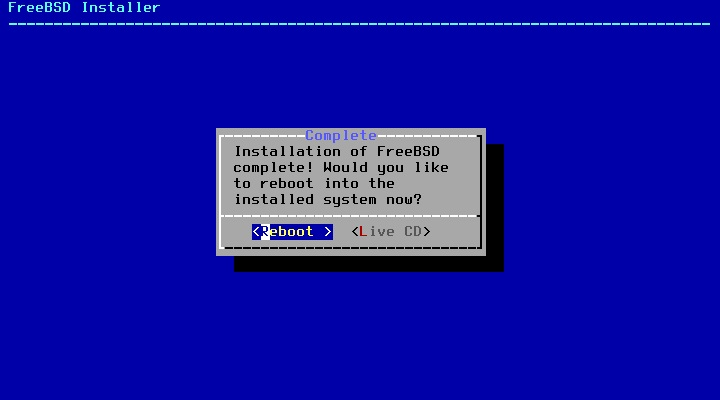
Pós Instalação
Assim que o sistema iniciar logue na conta de administrador: (login: root - senha: senha que você digitou para acesso administrativo)
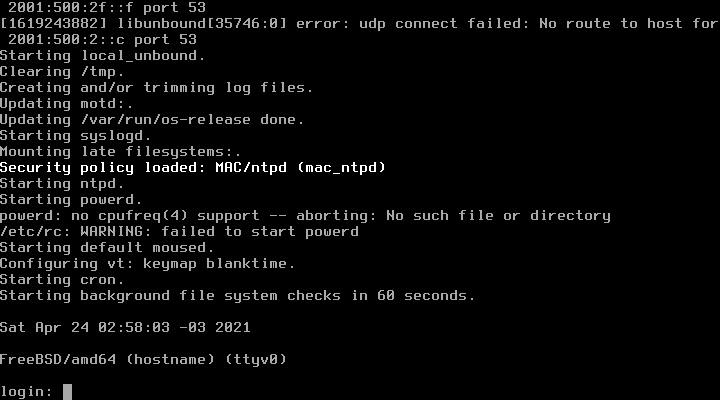
Assim que logado na conta de root vamos começar a preparar o sistema...
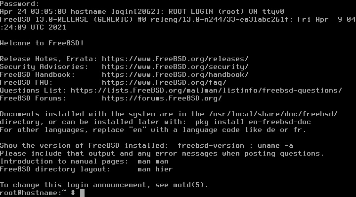
Para atualizar o núcleo do sistema use o comando:
freebsd-update fetch install
Para atualizar os pacotes insira o comando:
pkg update && upgrade
Do you want to fetch and install it now?: y
Se aparecer:
Your packages are up to date
Significa que seu sistema já está devidamente atualizado.
Caso tenha escolhido usar o ports use o comando abaixo para fetch, extract e update do ports:
portsnap auto
Pronto! Seu sistema está devidamente instalado e atualizado... Mas ainda da pra melhorar.
Configuração para Usuário Final
Instalação de Desktop Environment
Se você está lendo isso as chances são que você não vai utilizar o FreeBSD como sistema de servidor. O FreeBSD pode ser utilizado normalmente como um sistema para usuário final, entretanto, Desktop Environments (ambientes gráficos) geralmente não são tão polidos e atualizados no FreeBSD tanto quanto são no universo Linux. Se você utilizar os fóruns vai ver que grande parte dos usuários prefere utilizar apenas um gerenciador de janelas (window manager) e não um ambiente completo (como o Cinnamon, por exemplo). Os recém chegados do Linux provavelmente instalam algum port de XFCE, MATE ou KDE, mas saiba que alguns ambientes aqui podem (não quer dizer que vão) ser problemáticos (ou simplesmente depreciados).
Isso não significa que você não pode ter uma excelente experiência utilizando o FreeBSD como daily driver, mas como esses ambientes recebem relativamente menos suporte e tem um público menor por aqui você não pode se der ao luxo de achar que pode simplesmente instalar um ambiente gráfico e dar por encerrado o seu dia. O FreeBSD separa muito bem o espaço de sistema e espaço de usuário e, independente do ambiente que você utilize você ainda terá que acessar uma camada mais íntima do sistema.
Instalação do Xorg
A primeira coisa que precisamos para instalar um ambiente gráfico é o Xorg, para instala-lo utilize o comando:
pkg install xorg
Proceed with this action? y
Instalação dos pacotes de Ambiente Gráfico
Para instalação do Gnome:
pkg install gdm gnome3
Para instalação do KDE:
pkg install kde5
Para Instalação do XFCE:
pkg install xfce slim
Para Instalação do Mate:
pkg install mate slim
Para instalação do LxQT:
pkg install lxqt slim
Para instalação do Cinnamon:
pkg install cinnamon slim
Edição do FSTAB
Esses ambientes (por via de regra) dependem do process file system montados, para isso vamos editar o /etc/fstab. Caso nunca tenha utilizado um editor de texto por terminal antes eu recomendo instalar o nano para editar o arquivo, instale-o com o comando:
pkg install nano
Edite o arquivo com o comando:
nano /etc/fstab
Adicione essa linha (seguindo a tabela e inserindo os espaços com Tab):
proc /proc procfs rw 0 0
Para sair do nano o comando é Ctrl + x, quando utilizar esse comando caso não tenha salvado o arquivo ele vai perguntar se você deseja salvar antes de sair, obviamente escolha que sim e tecle Enter para confirmar o nome do arquivo (não edite o nome do arquivo!).
Edição do RCCONF
Por via de regra esses ambientes pedem algumas alterações no arquivo /etc/rc.conf.
para editar o arquivo com o nano execute o comando:
nano /etc/rc.conf
acrescente essas linhas ao final do arquivo:
dbus_enable="YES"
hald_enable="YES"
(não mais necessário)
Os ambientes gráficos precisam da adição de linhas específicas.
Caso escolha o KDE ative o SDDM:
sddm_enable="YES"
(apenas para chamar o gerenciador de exibição para o KDE)
Caso escolha o Gnome ative o GDM e os serviços do Gnome:
gdm_enable="YES"
(apenas para chamar o gerenciador de exibição Gnome)
gnome_enable="YES"
(para iniciar os serviços do gnome)
Caso escolha os demais Ambientes ative o Slim:
slim_enable="YES"
(apenas para chamar o gerenciador de exibição SLiM para os demais desktop environments)
Caso queira mudar o tema do slim insira a pasta do tema em /usr/local/share/slim/themes/ e altere a opção current theme no arquivo /usr/local/etc/slim.conf.
Edição do arquivo XINITRC
Caso ainda esteja logado como root, deslogue utilizando o comando:
exit
e logue na sua conta de usuário comum. Assim que tiver na sua conta pessoal, utilize o nano para configurar o arquivo .xinitrc com o comando:
nano ~/.xinitrc
Acrescente as linhas:
export LC_ALL=pt_BR.UTF-8
export LANGUAGE=pt_BR.UTF-8
export LANG=pt_BR.UTF-8
setxkbmap -model abnt2 -layout br
Caso tenha selecionado algum ambiente que precisa ser iniciado pelo SLiM adicione a linha correspondente:
exec startxfce4
para iniciar o XFCE pelo SLiM
exec mate-session
para iniciar o Mate pelo SLiM
exec startlxqt
para iniciar o LxQT pelo SLiM
exec cinnamon-session
para iniciar o Cinnamon pelo SLiM
Feche o arquivo com Ctrl + x, confirme salvar.
Ambiente gráfico devidamente instalado!
Se você fez tudo certo basta utilizar o comando abaixo para reiniciar a máquina e já iniciar no seu gerenciador de exibição, e poder logar e utilizar o seu FreeBSD com ambiente gráfico.
shutdown -r now
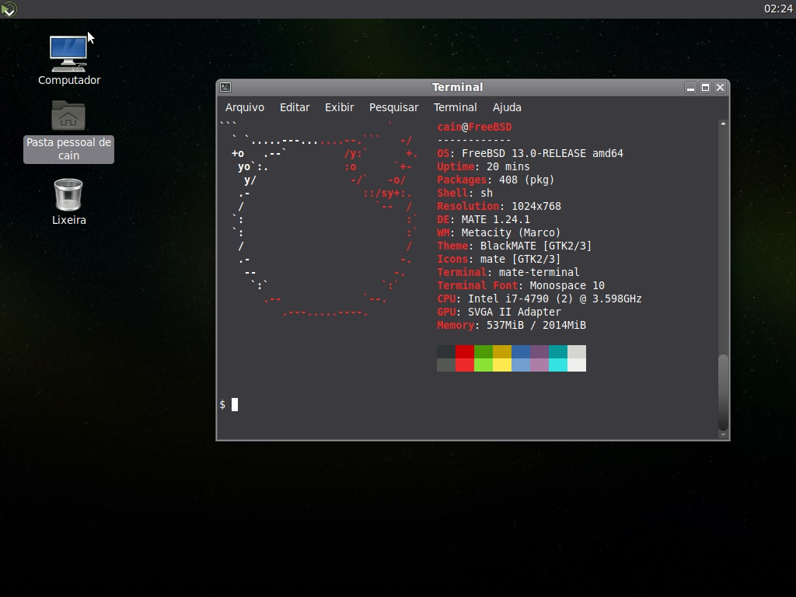
Mas ainda é só o começo...
Existem diversas alterações que ainda podem ser feitas no sistema para melhorar a sua experiência, da instalação dos drivers de vídeo (drm-kmod) até a otimizações nos arquivos /etc/profile, /etc/login.conf, /etc/fstab, /boot/loader.conf, /etc/sysctl.conf, /etc/rc.conf.
Aos poucos postarei mais informações e otimizações, porém, com uma interface gráfica, com conhecimento do pkg install para instalar os aplicativos e sabendo alterar os arquivos do sistema por meio do nano você já tem mais do que o suficiente para começar bem no FreeBSD 😉
Caso queira continuar...
Aqui vão algumas alterações recomendadas:
/etc/rc.conf
Para desabilitar completamente o Sendmail:
sendmail_enable="NO"
(ao invés do depreciado sendmail_enable="NONE")
sendmail_submit_enable="NO"
sendmail_outbound_enable="NO"
sendmail_msp_queue_enable="NO"
Para habilitar a sincronização de horário no boot:
ntpd_sync_on_start="YES"
(adicione após ntpd_enable="YES")
/boot/loader.conf
Para habilitar o novo virtual console:
kern.vty="vt"
Para reduzir o tempo do prompt de autoboot para 5 segundos:
autoboot_delay="5"
Mudar o ntpd para o openntpd:
pkg install openntpd
edite o ntpd.conf:
nano /usr/local/etc/ntpd.conf
edite para o seguinte conteúdo:
servers pool.ntp.br
No rc.conf, edite a linha:
ntpd_enable="YES"
para:
ntpd_enable="NO"
e logo abaixo insira a linha:
openntpd_enable="YES"
Configuração padrão de localização e entrada para todos os usuários
o LANG=xx.YY.ZZZZ muda as variáveis de ambiente para o código de linguagem xx, o código de país YY e codificação de caracteres ZZZZ.
O idioma e o código do país afetam o idioma padrão das aplicações, formatação de números, formatação de data e hora, agrupamento de strings, configurações de moeda e entre outras coisas.
Ao alterar o locale usando a codificação de caracteres UTF-8, o sistema pode entender e exibir cada um dos 1112064 caracteres no conjunto de caracteres Unicode, ao invés de apenas US ASCII como é o padrão com LANG=C.
Edite o banco de dados da classe de login em /etc/login.conf para adicionar um conjunto de caracteres e localidade padrão. Os shells de login herdarão as variáveis de ambiente definidas aqui na classe padrão ou em uma classe mais restrita, se corresponder a uma.
altere de:
:charset=UTF-8:\
:lang=en_US.UTF-8:
para:
:charset=UTF-8:\
:lang=pt_BR.UTF-8:
Após fazer as alterações reconstrua o banco de dados de login com
cap_mkdb /etc/login.conf
Você pode ter que especificar a nova localidade em outro lugar (como /etc/profile) para usos de shell sem login, como GDM e outros gerenciadores de login.
em /etc/profile adicione as linhas:
LANG=pt_BR.UTF-8; export LANG
CHARSET=UTF-8; export CHARSET
Para verificar a localização execute no seu próximo login o comando:
locale
Se o seu LC_ALL= não conter nenhuma especificação não se preocupe, LC_ALL só deve ser definido se você deseja (forçosamente) anular qualquer e todas as outras configurações LC_*.
isso retira a necessidade das linhas...
export LC_ALL=pt_BR.UTF-8
export LANGUAGE=pt_BR.UTF-8
export LANG=pt_BR.UTF-8
serem adicionadas em todo o ~/.xinitrc de um novo usuário criado no sistema.
Se você criar um padrão de configuração para ser herdado por todos os usuários você pode criar um arquivo .xinitrc em /usr/share/skel e quando criar o usuário o sistema copiará esse mesmo arquivo de configuração para o /home do usuário
Coloquei alguma configuração errada e agora o pc não inicia mais... O que fazer?
Selecione o opção single user durante o boot, logue como root e para poder editar os arquivos utilize os comandos:
fsck -y
mount -u /
mount -a -t ufs
swapon -a
(caso utilize swap)
Pronto! agora você pode acessar e corrigir os erros nos arquivos de sistema e continuar de onde parou 😉